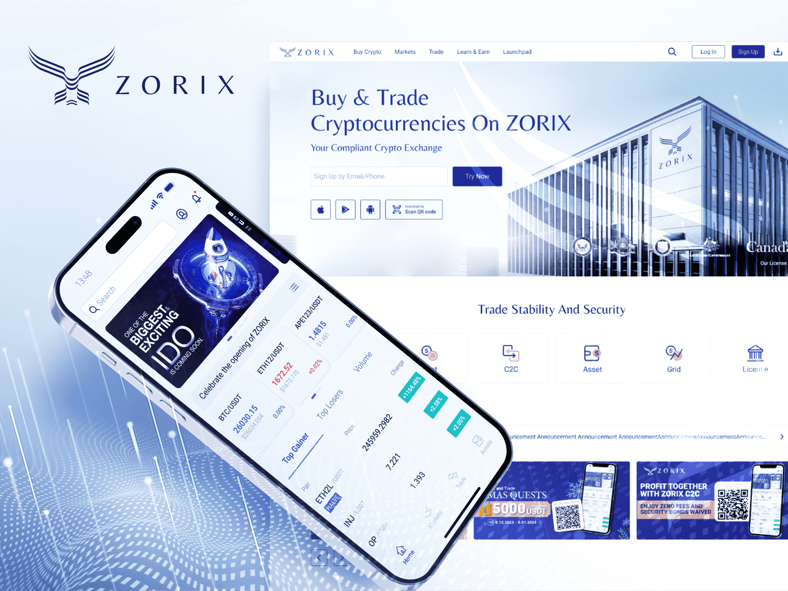

安聯人壽客戶既業務績效管理 SaSS系統
工作項目
User Flow | 易用性測試 | 使用者訪談 | UI設計 | SRS需求文件 | 測試文件
專案角色
擔任UX PM＋設計專案主管 | 設計3人＋工程師4人
專案介紹
此應用的主要功能包括客戶關係管理 (CRM)、保單處理、保單記錄以及內部組織績效報告(PMS)、目標設定和人才招募等功能。這是一個專為業務員設計的應用程式，並需滿足人壽公司在七個不同國家的業務員需求。

User Journey
- 目標角色定義：利用人物誌收斂主要使用角色需求，明確不同職級業務員在日常工作的主要目標與痛點。
- 功能地圖規劃：依照使用情境拆解流程，整理 App 主要功能模組、操作動線與優先級，確保任務可被順利完成。
- 銷售階段對應：將不同銷售階段（開發、拜訪、成交、售後）的目標對應到可操作功能，強化流程與界面的一致性。
- 業務邏輯落地：依等級區分角色、定義功能內容與績效計算方式，確保規則可被系統化並可被量化追蹤。